基礎実習 Ⅱ Universal Design
リサーチ１ 通常の使い方
ピーラー
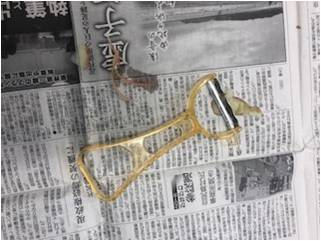 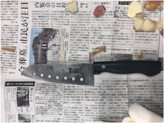
{kind=link}
{kind=link}
すりおろし器
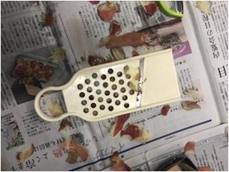
{kind=link}
リサーチ１ 通常の使い方からわかったこと
利き手が道具を切る役割を担っている一方、反対の手はりんごを抑える役割である。 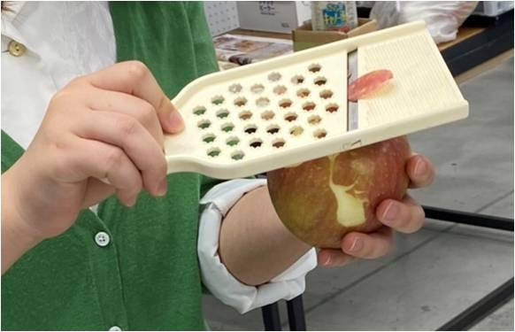 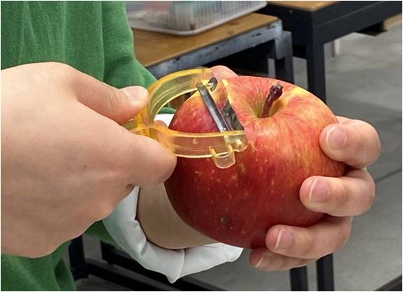
→りんごに力をかけやすい、角度を調整しやすい
{kind=link}
{kind=link}
全部の道具に言えること
・削りだしが一番力がかかる 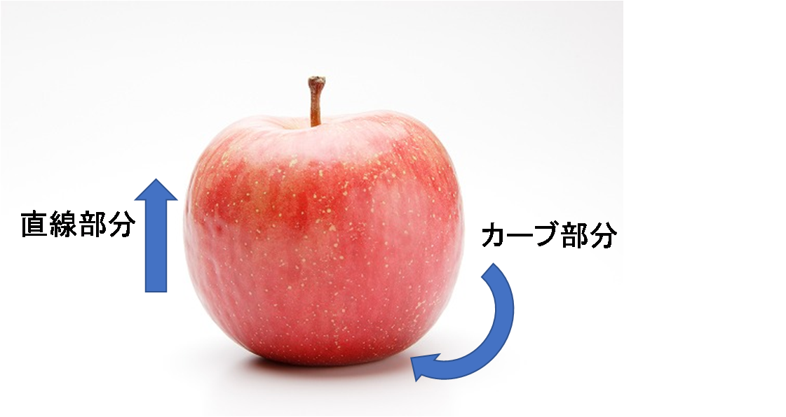
・しっかり固定しないとりんごが転がっていく
・下のカーブまで一回ではむきづらい
{kind=link}
リサーチ２ 身体的な違いを想定して…
###テープで指を固定して、片手かつ小指がない想定 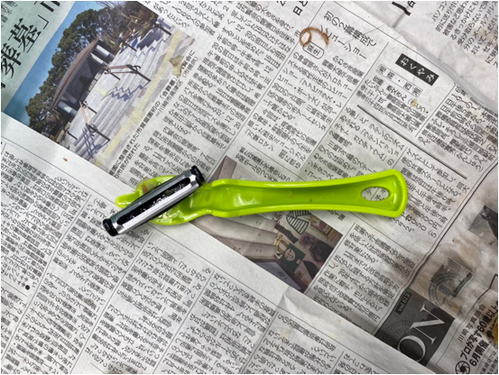 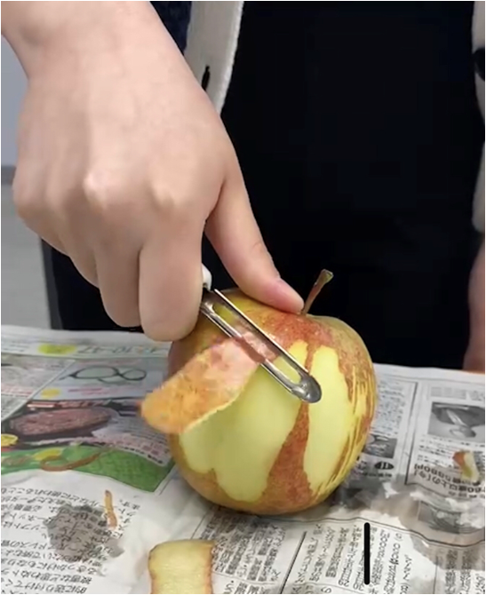
横むきタイプで実験 →多少ぐらつくものの、とくに不自由せず使えた
{kind=link}
{kind=link}
テープで親指固定、片手かつ親指がない想定
→親指を支点に力をかけられなくなる 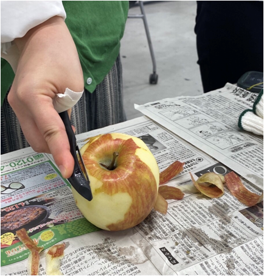 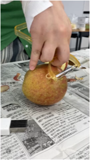
まったくりんごをむくことができなかった。
横向きタイプなら直線部分だけむけた。
{kind=link}
{kind=link}
テープで関節を固定してみた
→指を曲げづらくなる状態。 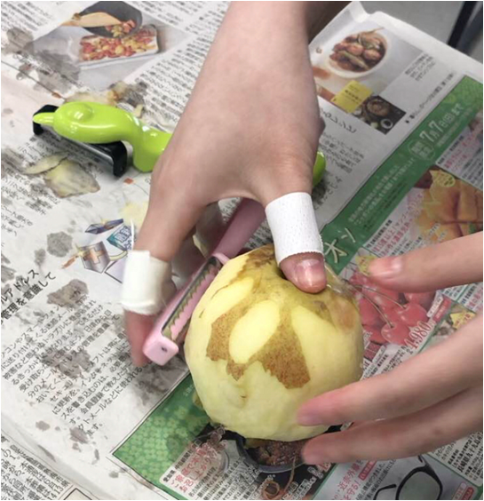
力が入りづらく、最初はりんごをむくのに苦戦していた様子。
{kind=link}
リサーチ２ 身体的な違いからわかったこと
親指が無い想定が一番むきにくかった。なぜか？
→親指が他の四本指にはない動きをするから。
親指は四本指と違う方向に曲がる
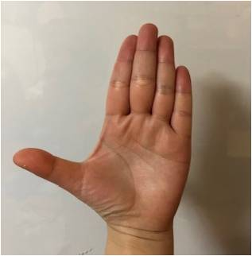
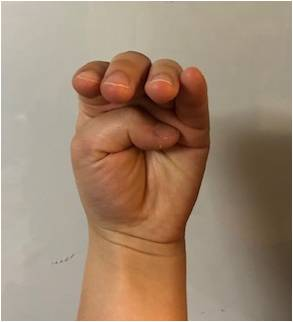
リサーチ３ 片手での作業
ピーラーA
持ち手が大きいため、片手の時少し持ちづらかった。
下の曲線はむきづらいが、上半分はむける。
りんごのへたにあるくぼみに親指をいれるとやりやすかった。
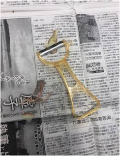
ピーラーB
この持ち方は、安定せず削りづらかった。→ 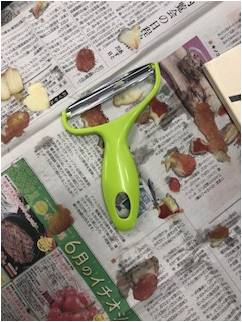 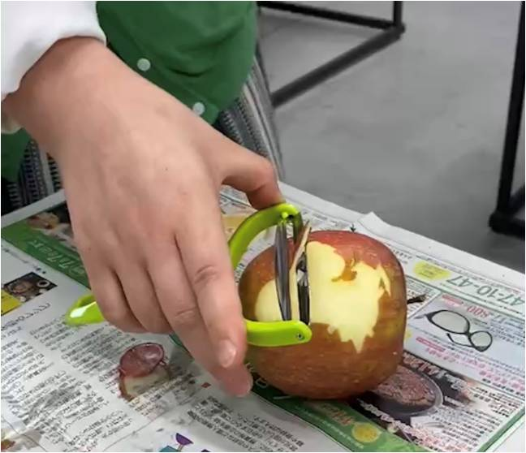
{kind=link}
{kind=link}
親指で刃の近くのカーブを持ち、4本指をリンゴに押し当てることで 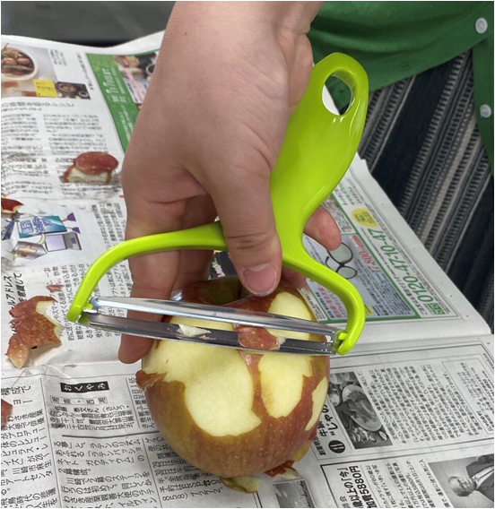
刃を動かすと削りやすかった。
{kind=link}
ピーラーC
このタイプのピーラーは、刃をしっかり当てないと切れない。 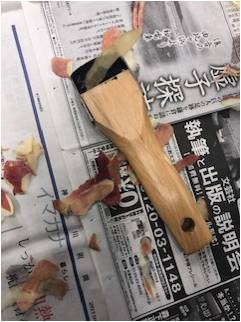 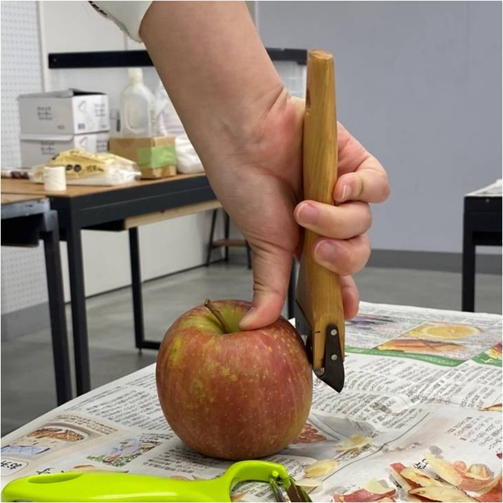
片手ではりんごが転がってしまった。
{kind=link}
{kind=link}
ピーラーD
刃がギザギザしているため、りんごに刃を入れづらかった。 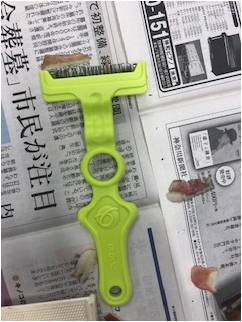 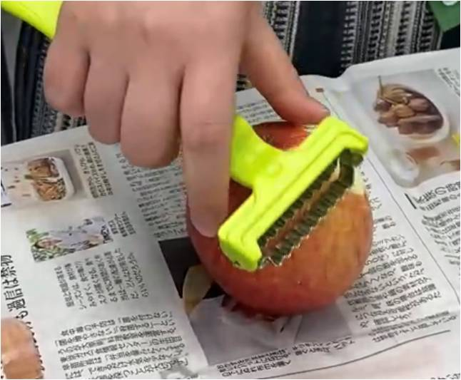
また、持ち手が使っているものの中でも、長く、幅が広かったため、
片手では使いづらかった。
{kind=link}
{kind=link}
すりおろし器
切りたい対象を刃に当て上下に動かすことで切れるので、片手では
ほとんどりんごをむけなかった。
片手では、りんごをおしつけて固定する方法がない。
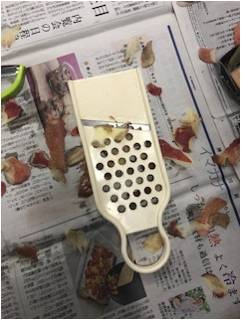
包丁
両手の時は一番使いやすかったが、片手となると、刃がりんごに深く
切り込みを入れてしまい、切りづらかった。
刃がむきだしの構造であるため、怪我をしそう。
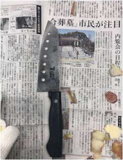
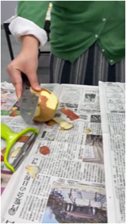
横向きタイプ
使ってきた道具の中で一番りんごをむきやすかった。 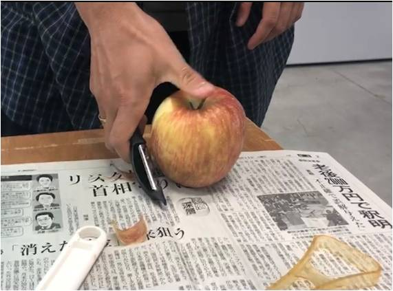
横にしてむくから持ち手が邪魔にならないし、力の入れ方として安定する。
{kind=link}
考察１ ユーザーの違い
力の強弱
片手で試したものの中には手が麻痺していて、力が入りづらい人には難しそうな切り方などもあった。
慣れている道具の形
普段使い慣れている形（包丁、ピーラー、はさみ、カッター）に近い形のほうが使い方を想像しやすい 。
手の大小
りんごを覆える手の大きさのほうが安定する。
考察２ 手の動きや働きについて
親指が手の動きの中で重要な役割をしていることがわかった。
→一本だけ違う方向を向いているから、なにかに引っかけたり、物を固定するとき四本指の反対側から力をかけられる。
ものを引き寄せる動き（手をパーからグーに戻す動き）が片手でむくとき、やりやすかった。
→刃を当てて動かさなくてはいけないので、指は自然とものを引き寄せる動きに似るのかもしれない。